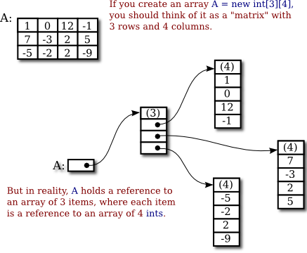
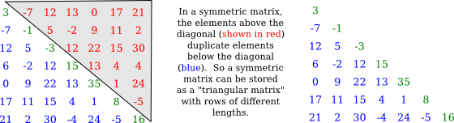
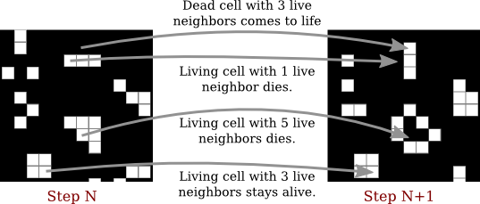
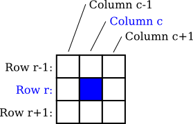
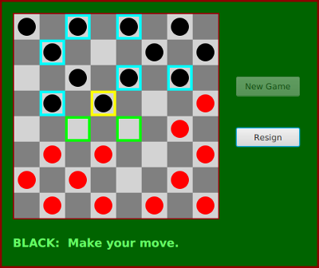
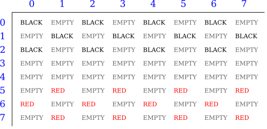

Section 7.5
Two-dimensional Arrays
Two-dimensional arrays were introduced in Subsection 3.8.5, but we haven't done much with them since then. A 2D array has a type such as int[][] or String[][], with two pairs of square brackets. The elements of a 2D array are arranged in rows and columns, and the new operator for 2D arrays specifies both the number of rows and the number of columns. For example,
int[][] A; A = new int[3][4];
This creates a 2D array of int that has 12 elements arranged in 3 rows and 4 columns. Although I haven't mentioned it, there are initializers for 2D arrays. For example, this statement creates the 3-by-4 array that is shown in the picture below:
int[][] A = { { 1, 0, 12, -1 },
{ 7, -3, 2, 5 },
{ -5, -2, 2, -9 }
};
An array initializer for a 2D array contains the rows of A, separated by commas and enclosed between braces. Each row, in turn, is a list of values separated by commas and enclosed between braces. There are also 2D array literals with a similar syntax that can be used anywhere, not just in declarations. For example,
A = new int[][] { { 1, 0, 12, -1 },
{ 7, -3, 2, 5 },
{ -5, -2, 2, -9 }
};
All of this extends naturally to three-dimensional, four-dimensional, and even higher-dimensional arrays, but they are not used very often in practice.
7.5.1 The Truth About 2D Arrays
But before we go any farther, there is a little surprise. Java does not actually have two-dimensional arrays. In a true 2D array, all the elements of the array occupy a continuous block of memory, but that's not true in Java. The syntax for array types is a clue: For any type BaseType, we should be able to form the type BaseType[], meaning "array of BaseType." If we use int[] as the base type, the type that we get is "int[][] meaning "array of int[]" or "array of array of int." And in fact, that's what happens. The elements in a 2D array of type int[][] are variables of type int[]. And remember that a variable of type int[] can only hold a pointer to an array of int. So, a 2D array is really an array of pointers, where each pointer can refer to a one-dimensional array. Those one-dimensional arrays are the rows of the 2D array. A picture will help to explain this. Consider the 3-by-4 array A defined above.

For the most part, you can ignore the reality and keep the picture of a grid in mind. Sometimes, though, you will need to remember that each row in the grid is really an array in itself. These arrays can be referred to as A[0], A[1], and A[2]. Each row is in fact a value of type int[]. It could, for example, be passed to a subroutine that asks for a parameter of type int[].
Some of the consequences of this structure are a little subtle. For example, thinking of a 2D array, A, as an array of arrays, we see that A.length makes sense and is equal to the number of rows of A. If A has the usual shape for a 2D array, then the number of columns in A would be the same as the number of elements in the first row, that is, A[0].length. But there is no rule that says that all of the rows of A must have the same length (although an array created with new BaseType[rows][columns] will always have that form). Each row in a 2D array is a separate one-dimensional array, and each of those arrays can have a different length. In fact, it's even possible for a row to be null. For example, the statement
A = new int[3][];
with no number in the second set of brackets, creates an array of 3 elements where all the elements are null. There are places for three rows, but no actual rows have been created. You can then create the rows A[0], A[1], and A[2] individually.
As an example, consider a symmetric matrix. A symmetric matrix, M, is a two-dimensional array in which the number of rows is equal to the number of columns and satisfying M[i][j] equals M[j][i] for all i and j. Because of this equality, we only really need to store M[i][j] for i >= j. We can store the data in a "triangular matrix":

It's easy enough to make a triangular array, if we create each row separately. To create a 7-by-7 triangular array of double, we can use the code segment
double[][] matrix = new double[7][]; // rows have not yet been created!
for (int i = 0; i < 7; i++) {
matrix[i] = new double[i+1]; // Create row i with i + 1 elements.
}
We just have to remember that if we want to know the value of the matrix at (i,j), and if i < j, then we actually have to get the value of matrix[j][i] in the triangular matrix. And similarly for setting values. It's easy to write a class to represent symmetric matrices:
/**
* Represents symmetric n-by-n matrices of real numbers.
*/
public class SymmetricMatrix {
private double[][] matrix; // A triangular matrix to hold the data.
/**
* Creates an n-by-n symmetric matrix in which all entries are 0.
*/
public SymmetricMatrix(int n) {
matrix = new double[n][];
for (int i = 0; i < n; i++)
matrix[i] = new double[i+1];
}
/**
* Returns the matrix entry at position (row,col). (If row < col,
* the value is actually stored at position (col,row).)
*/
public double get( int row, int col ) {
if (row >= col)
return matrix[row][col];
else
return matrix[col][row];
}
/**
* Sets the value of the matrix entry at (row,col). (If row < col,
* the value is actually stored at position (col,row).)
*/
public void set( int row, int col, double value ) {
if (row >= col)
matrix[row][col] = value;
else
matrix[col][row] = value;
}
/**
* Returns the number of rows and columns in the matrix.
*/
public int size() {
return matrix.length; // The size is the number of rows.
}
} // end class SymmetricMatrix
This class is in the file SymmetricMatrix.java, and a small program to test it can be found in TestSymmetricMatrix.java.
By the way, the standard function Arrays.copyOf() can't make a full copy of a 2D array in a single step. To do that, you need to copy each row separately. To make a copy of a two-dimensional array of int, for example:
int[][] B = new int[A.length][]; // B has as many rows as A.
for (int i = 0; i < A.length; i++) {
B[i] = Arrays.copyOf(A[i], A[i].length)); // Copy row i.
}
7.5.2 Conway's Game Of Life
As an example of more typical 2D array processing, let's look at a very well-known example: John Conway's Game of Life, invented by mathematician John Horton Conway in 1970. This Game of Life is not really a game (although sometimes it's referred to as a "zero-person game" that plays itself). It's a "two-dimensional cellular automaton." This just means that it's a grid of cells whose content changes over time according to definite, deterministic rules. In Life, a cell can only have two possible contents: It can be "alive" or "dead." We will use a 2D array to represent the grid, with each element of the array representing the content of one cell in the grid. In the game, an initial grid is set up in which each cell is marked as either alive or dead. After that, the game "plays itself." The grid evolves through a series of time steps. The contents of the grid at each time step are completely determined by the contents at the previous time step, according to simple rules: Each cell in the grid looks at its eight neighbors (horizontal, vertical, and diagonal) and counts how many of its neighbors are alive. Then the state of the cell in the next step is determined by the rules:
- If the cell is alive in the current time step: If the cell has 2 or 3 living neighbors, then the cell remains alive in the next time step; otherwise, it dies. (A living cell dies of loneliness if it has 0 or 1 living neighbor, and of overcrowding if it has more than 3 living neighbors.)
- If the cell is dead in the current time step: If the cell has 3 living neighbors, then the cell becomes alive in the next time step; otherwise, it remains dead. (Three living cells give birth to a new living cell.)
Here's a picture of part of a Life board, showing the same board before and after the rules have been applied. The rules are applied to every cell in the grid. The picture shows how they apply to four of the cells:

The Game of Life is interesting because it gives rise to many interesting and surprising patterns. (Look it up on Wikipedia.) Here, we are just interested in writing a program to simulate the game. The complete program can be found in the file Life.java. In the program, the life grid is shown as a grid of squares in which dead squares are black and living squares are white. (The program uses MosaicCanvas.java from Section 4.7 to represent the grid, so you will also need that file to compile and run the program.) In the program, you can fill the life board randomly with dead and alive cells, or you can use the mouse to set up the game board. There is a "Step" button that will compute one time-step of the game, and a "Start" button that will run time steps as an animation.
We'll look at some of the array processing involved in implementing the Game of Life for this program. Since a cell can only be alive or dead, it is natural to use a two-dimensional array of boolean[][] to represent the states of all the cells. The array is named alive, and alive[r][c] is true when the cell in row r, column c is alive. The number of rows and the number of columns are equal and are given by a constant, GRID_SIZE. So, for example, to fill the Life grid with random values, the program uses simple nested for loops:
for (int r = 0; r < GRID_SIZE; r++) {
for (int c = 0; c < GRID_SIZE; c++) {
// Use a 25% probability that the cell is alive.
alive[r][c] = (Math.random() < 0.25);
}
}
Note that the expression (Math.random() < 0.25) is a true/false value that can be assigned to a boolean array element. The array is also used to set the color of the cells on the screen. Since the grid of cells is displayed on screen as a MosaicCanvas, setting the colors is done using the MosaicCanvas API. Note that the actual drawing is done in the MosaicCanvas class (which has its own 2D array of type Color[][] to keep track of the colors of each cell). The Life program just has to set the colors in the mosaic, using the MosaicCanvas API. This is done in the program in a method named showBoard() that is called each time the board changes. Again, simple nested for loops are used to set the color of each square in the grid:
for (int r = 0; r < GRID_SIZE; r++) {
for (int c = 0; c < GRID_SIZE; c++) {
if (alive[r][c])
display.setColor(r,c,Color.WHITE);
else
display.setColor(r,c,null); // Shows the background color, black.
}
}
Of course, the most interesting part of the program is computing the new state of the board by applying the rules to the current state. The rules apply to each individual cell, so again we can use nested for loops to work through all the cells on the board, but this time the processing is more complicated. Note first that we can't make changes to the values in the array as we work through it, since we will need to know the old state of a cell when processing its neighboring cells. In fact, the program uses a second array to hold the new board as it is being created. When the new board is finished, it can be substituted for the old board. The algorithm goes like this in pseudocode:
let newboard be a new boolean[][] array
for each row r:
for each column c:
Let N be the number of neighbors of cell (r,c) in the alive array
if ((N is 3) or (N is 2 and alive[r][c]))
newboard[r][c] = true;
else
newboard[r][c] = false;
alive = newboard
Note that at the end of the process, alive is pointing to a new array. This doesn't matter as long as the contents of the array represent the new state of the game. The old array will be garbage collected. The test for whether newboard[r][c] should be true or false might not be obvious, but it implements the rules correctly. We still need to work on counting the neighbors. Consider the cell in row r and column c. If it's not at an edge of the board, then it's clear where its neighbors are:

The row above row number r is row number r-1, and the row below is r+1. Similarly for the columns. We just have to look at the values of alive[r-1][c-1], alive[r-1][c], alive[r-1][c+1], alive[r][c-1], alive[r][c+1], alive[r+1][c-1], alive[r+1][c], and alive[r+1][c+1], and count the number that are true. (You should make sure that you understand how the array indexing works here.)
But there is a problem when the cell is along one of the edges of the grid. In that case, some of the array elements in the list don't exist, and an attempt to use them will cause an exception. To avoid the exception, we have to give special consideration to cells along the edges. One idea is that before referencing any array element, check that the array element actually exists. In that case, the code for neighbor counting becomes
if (r-1 >= 0 && c-1 >= 0 && alive[r-1][c-1])
N++; // A cell at position (r-1,c-1) exists and is alive.
if (r-1 >= 0 && alive[r-1][c])
N++; // A cell at position (r-1,c) exists and is alive.
if (r-1 >= 0 && c+1 <= GRID_SIZE && alive[r-1][c+1])
N++; // A cell at position (r-1,c+1) exists and is alive.
// and so on...
All the possible exceptions are avoided. But in my program, I actually do something that is common in 2D computer games—I pretend that the left edge of the board is attached to the right edge and the top edge to the bottom edge. For example, for a cell in row 0, we say that the row "above" is actually the bottom row, row number GRID_SIZE-1. I use variables to represent the positions above, below, left, and right of a given cell. The code turns out to be simpler than the code shown above. Here is the complete method for computing the new board:
private void doFrame() { // Compute the new state of the Life board.
boolean[][] newboard = new boolean[GRID_SIZE][GRID_SIZE];
for ( int r = 0; r < GRID_SIZE; r++ ) {
int above, below; // rows considered above and below row number r
int left, right; // columns considered left and right of column c
above = r > 0 ? r-1 : GRID_SIZE-1; // (for "?:" see Subsection 2.5.5)
below = r < GRID_SIZE-1 ? r+1 : 0;
for ( int c = 0; c < GRID_SIZE; c++ ) {
left = c > 0 ? c-1 : GRID_SIZE-1;
right = c < GRID_SIZE-1 ? c+1 : 0;
int n = 0; // number of alive cells in the 8 neighboring cells
if (alive[above][left])
n++;
if (alive[above][c])
n++;
if (alive[above][right])
n++;
if (alive[r][left])
n++;
if (alive[r][right])
n++;
if (alive[below][left])
n++;
if (alive[below][c])
n++;
if (alive[below][right])
n++;
if (n == 3 || (alive[r][c] && n == 2))
newboard[r][c] = true;
else
newboard[r][c] = false;
}
}
alive = newboard;
}
Again, I urge you to check out the source code, Life.java, and try the program. Don't forget that you will also need MosaicCanvas.java.
7.5.3 Checkers
As a final example for this chapter, we'll look at a more substantial example of using a 2D array. This is the longest program that we have encountered so far, with 745 lines of code. The program lets two users play checkers against each other. The checkers game is played on an eight-by-eight board, which is based on an example from Subsection 6.5.1. The players are called "red" and "black," after the color of their checkers. I'm not going to explain the rules of checkers here; possibly you can learn them by trying out the program.
In the program, a player moves by clicking on the piece that they want to move, and then clicking on the empty square to which it is to be moved. As an aid to the players, any square that the current player can legally click at a given time is highlighted with a brightly colored border. The square containing a piece that has been selected to be moved, if any, is surrounded by a yellow border. Other pieces that can legally be moved are surrounded by a cyan-colored border. If a piece has already been selected to be moved, each empty square that it can legally move to is highlighted with a green border. The game enforces the rule that if the current player can jump one of the opponent's pieces, then the player must jump. When a player's piece becomes a king, by reaching the opposite end of the board, a big white "K" is drawn on the piece. Here is a picture of the program early in a game. It is black's turn to move. Black has selected the piece in the yellow-outlined square to be moved. Black can click one of the squares outlined in green to complete the move, or can click one of the squares outlined in cyan to select a different piece to be moved.

I will only cover a part of the programming for this example. I encourage you to read the complete source code, Checkers.java. It's long and complex, but with some study, you should understand all the techniques that it uses. The program is a good example of state-based, event-driven, object-oriented programming.
The data about the pieces on the board are stored in a two-dimensional array. Because of the complexity of the program, I wanted to divide it into several classes. In addition to the main class, there are several nested classes. One of these classes is CheckersData, which handles the data for the board. It is not directly responsible for any part of the graphics or event-handling, but it provides methods that can be called by other classes that handle graphics and events. It is mainly this class that I want to talk about.
The CheckersData class has an instance variable named board of type int[][]. The value of board is set to "new int[8][8]", an 8-by-8 grid of integers. The values stored in the grid are defined as constants representing the possible contents of a square on a checkerboard:
static final int
EMPTY = 0, // Value representing an empty square.
RED = 1, // A regular red piece.
RED_KING = 2, // A red king.
BLACK = 3, // A regular black piece.
BLACK_KING = 4; // A black king.
The constants RED and BLACK are also used in my program (or, perhaps, misused) to represent the two players in the game. When a game is started, the values in the array are set to represent the initial state of the board. The grid of values looks like

A regular black piece can only move "down" the grid. That is, the row number of the square it moves to must be greater than the row number of the square it comes from. A regular red piece can only move up the grid. Kings of either color can move in both directions.
One function of the CheckersData class is to take care of changes to the data structures that need to be made when one of the users moves a checker. An instance method named makeMove() is provided to do this. When a player moves a piece from one square to another, the values of two elements in the array are changed. But that's not all. If the move is a jump, then the piece that was jumped is removed from the board. (The method checks whether the move is a jump by checking if the square to which the piece is moving is two rows away from the square where it starts.) Furthermore, a RED piece that moves to row 0 or a BLACK piece that moves to row 7 becomes a king. Putting all that into a subroutine is good programming: the rest of the program doesn't have to worry about any of these details. It just calls this makeMove() method:
/**
* Make the move from (fromRow,fromCol) to (toRow,toCol). It is
* ASSUMED that this move is legal! If the move is a jump, the
* jumped piece is removed from the board. If a piece moves
* to the last row on the opponent's side of the board, the
* piece becomes a king.
*/
void makeMove(int fromRow, int fromCol, int toRow, int toCol) {
board[toRow][toCol] = board[fromRow][fromCol]; // Move the piece.
board[fromRow][fromCol] = EMPTY; // The square it moved from is now empty.
if (fromRow - toRow == 2 || fromRow - toRow == -2) {
// The move is a jump. Remove the jumped piece from the board.
int jumpRow = (fromRow + toRow) / 2; // Row of the jumped piece.
int jumpCol = (fromCol + toCol) / 2; // Column of the jumped piece.
board[jumpRow][jumpCol] = EMPTY;
}
if (toRow == 0 && board[toRow][toCol] == RED)
board[toRow][toCol] = RED_KING; // Red piece becomes a king.
if (toRow == 7 && board[toRow][toCol] == BLACK)
board[toRow][toCol] = BLACK_KING; // Black piece becomes a king.
} // end makeMove()
An even more important function of the CheckersData class is to find legal moves on the board. In my program, a move in a Checkers game is represented by an object belonging to the following class:
/**
* A CheckersMove object represents a move in the game of
* Checkers. It holds the row and column of the piece that is
* to be moved and the row and column of the square to which
* it is to be moved. (This class makes no guarantee that
* the move is legal.)
*/
private static class CheckersMove {
int fromRow, fromCol; // Position of piece to be moved.
int toRow, toCol; // Square it is to move to.
CheckersMove(int r1, int c1, int r2, int c2) {
// Constructor. Set the values of the instance variables.
fromRow = r1;
fromCol = c1;
toRow = r2;
toCol = c2;
}
boolean isJump() {
// Test whether this move is a jump. It is assumed that
// the move is legal. In a jump, the piece moves two
// rows. (In a regular move, it only moves one row.)
return (fromRow - toRow == 2 || fromRow - toRow == -2);
}
} // end class CheckersMove.
The CheckersData class has an instance method which finds all the legal moves that are currently available for a specified player. This method is a function that returns an array of type CheckersMove[]. The array contains all the legal moves, represented as CheckersMove objects. The specification for this method reads
/** * Return an array containing all the legal CheckersMoves * for the specified player on the current board. If the player * has no legal moves, null is returned. The value of player * should be one of the constants RED or BLACK; if not, null * is returned. If the returned value is non-null, it consists * entirely of jump moves or entirely of regular moves, since * if the player can jump, only jumps are legal moves. */ CheckersMove[] getLegalMoves(int player)
A brief pseudocode algorithm for the method is
Start with an empty list of moves Find any legal jumps and add them to the list if there are no jumps: Find any other legal moves and add them to the list if the list is empty: return null else: return the list
Now, what is this "list"? We have to return the legal moves in an array. But since an array has a fixed size, we can't create the array until we know how many moves there are, and we don't know that until near the end of the method, after we've already made the list! A neat solution is to use an ArrayList instead of an array to hold the moves as we find them. In fact, I use an object defined by the parameterized type ArrayList<CheckersMove> so that the list is restricted to holding objects of type CheckersMove. As we add moves to the list, it will grow just as large as necessary. At the end of the method, we can create the array that we really want and copy the data into it:
Let "moves" be an empty ArrayList<CheckersMove> Find any legal jumps and add them to moves if moves.size() is 0: // There are no legal jumps! Find any other legal moves and add them to moves if moves.size() is 0: // There are no legal moves at all! return null else: Let moveArray be an array of CheckersMoves of length moves.size() Copy the contents of moves into moveArray return moveArray
Now, how do we find the legal jumps or the legal moves? The information we need is in the board array, but it takes some work to extract it. We have to look through all the positions in the array and find the pieces that belong to the current player. For each piece, we have to check each square that it could conceivably move to, and check whether that would be a legal move. If we are looking for legal jumps, we want to look at squares that are two rows and two columns away from the piece. There are four squares to consider. Thus, the line in the algorithm that says "Find any legal jumps and add them to moves" expands to:
For each row of the board:
For each column of the board:
if one of the player's pieces is at this location:
if it is legal to jump to row + 2, column + 2
add this move to moves
if it is legal to jump to row - 2, column + 2
add this move to moves
if it is legal to jump to row + 2, column - 2
add this move to moves
if it is legal to jump to row - 2, column - 2
add this move to moves
The line that says "Find any other legal moves and add them to moves" expands to something similar, except that we have to look at the four squares that are one column and one row away from the piece. Testing whether a player can legally move from one given square to another given square is itself non-trivial. The square the player is moving to must actually be on the board, and it must be empty. Furthermore, regular red and black pieces can only move in one direction. I wrote the following utility method to check whether a player can make a given non-jump move:
/**
* This is called by the getLegalMoves() method to determine
* whether the player can legally move from (r1,c1) to (r2,c2).
* It is ASSUMED that (r1,c1) contains one of the player's
* pieces and that (r2,c2) is a neighboring square.
*/
private boolean canMove(int player, int r1, int c1, int r2, int c2) {
if (r2 < 0 || r2 >= 8 || c2 < 0 || c2 >= 8)
return false; // (r2,c2) is off the board.
if (board[r2][c2] != EMPTY)
return false; // (r2,c2) already contains a piece.
if (player == RED) {
if (board[r1][c1] == RED && r2 > r1)
return false; // Regular red piece can only move down.
return true; // The move is legal.
}
else {
if (board[r1][c1] == BLACK && r2 < r1)
return false; // Regular black piece can only move up.
return true; // The move is legal.
}
} // end canMove()
This method is called by my getLegalMoves() method to check whether one of the possible moves that it has found is actually legal. I have a similar method that is called to check whether a jump is legal. In this case, I pass to the method the square containing the player's piece, the square that the player might move to, and the square between those two, which the player would be jumping over. The square that is being jumped must contain one of the opponent's pieces. This method has the specification:
/**
* This is called by other methods to check whether
* the player can legally jump from (r1,c1) to (r3,c3).
* It is assumed that the player has a piece at (r1,c1), that
* (r3,c3) is a position that is 2 rows and 2 columns distant
* from (r1,c1) and that (r2,c2) is the square between (r1,c1)
* and (r3,c3).
*/
private boolean canJump(int player, int r1, int c1,
int r2, int c2, int r3, int c3) { . . .
Given all this, you should be in a position to understand the complete getLegalMoves() method. It's a nice way to finish off this chapter, since it combines several topics that we've looked at: one-dimensional arrays, ArrayLists, and two-dimensional arrays:
CheckersMove[] getLegalMoves(int player) {
if (player != RED && player != BLACK)
return null; // (This will not happen in a correct program.)
int playerKing; // The constant for a King belonging to the player.
if (player == RED)
playerKing = RED_KING;
else
playerKing = BLACK_KING;
ArrayList<CheckersMove> moves = new ArrayList<CheckersMove>();
// Moves will be stored in this list.
/* First, check for any possible jumps. Look at each square on
the board. If that square contains one of the player's pieces,
look at a possible jump in each of the four directions from that
square. If there is a legal jump in that direction, put it in
the moves ArrayList.
*/
for (int row = 0; row < 8; row++) {
for (int col = 0; col < 8; col++) {
if (board[row][col] == player || board[row][col] == playerKing) {
if (canJump(player, row, col, row+1, col+1, row+2, col+2))
moves.add(new CheckersMove(row, col, row+2, col+2));
if (canJump(player, row, col, row-1, col+1, row-2, col+2))
moves.add(new CheckersMove(row, col, row-2, col+2));
if (canJump(player, row, col, row+1, col-1, row+2, col-2))
moves.add(new CheckersMove(row, col, row+2, col-2));
if (canJump(player, row, col, row-1, col-1, row-2, col-2))
moves.add(new CheckersMove(row, col, row-2, col-2));
}
}
}
/* If any jump moves were found, then the user must jump, so we
don't add any regular moves. However, if no jumps were found,
check for any legal regular moves. Look at each square on
the board. If that square contains one of the player's pieces,
look at a possible move in each of the four directions from
that square. If there is a legal move in that direction,
put it in the moves ArrayList.
*/
if (moves.size() == 0) {
for (int row = 0; row < 8; row++) {
for (int col = 0; col < 8; col++) {
if (board[row][col] == player || board[row][col] == playerKing) {
if (canMove(player,row,col,row+1,col+1))
moves.add(new CheckersMove(row,col,row+1,col+1));
if (canMove(player,row,col,row-1,col+1))
moves.add(new CheckersMove(row,col,row-1,col+1));
if (canMove(player,row,col,row+1,col-1))
moves.add(new CheckersMove(row,col,row+1,col-1));
if (canMove(player,row,col,row-1,col-1))
moves.add(new CheckersMove(row,col,row-1,col-1));
}
}
}
}
/* If no legal moves have been found, return null. Otherwise, create
an array just big enough to hold all the legal moves, copy the
legal moves from the ArrayList into the array, and return the array.
*/
if (moves.size() == 0)
return null;
else {
CheckersMove[] moveArray = new CheckersMove[moves.size()];
for (int i = 0; i < moves.size(); i++)
moveArray[i] = moves.get(i);
return moveArray;
}
} // end getLegalMoves
The checkers program is complex, and you can be sure that it didn't just fall together. It took a good deal of design work to decide what classes and objects would be used, what methods should be written, and what algorithms the methods should use. The complete source code is in the file Checkers.java. Take a look!